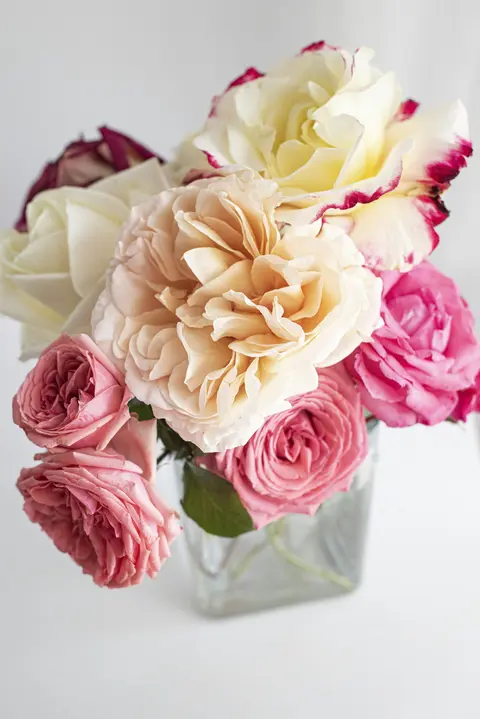
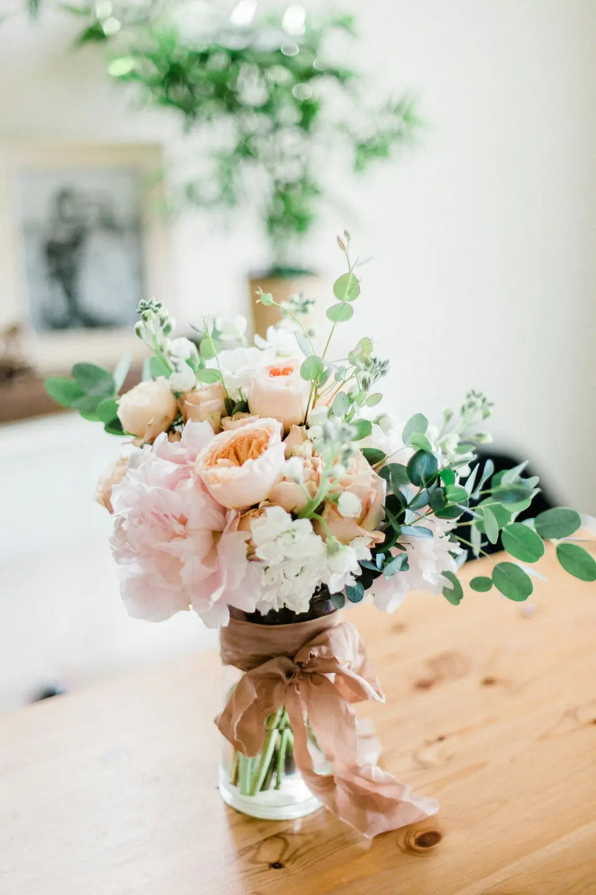
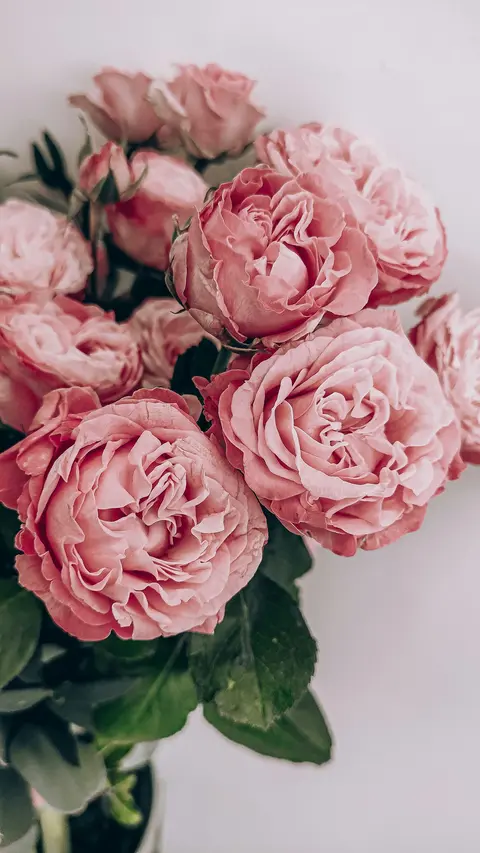
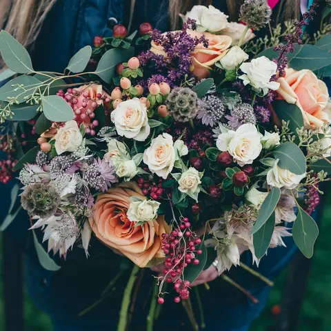
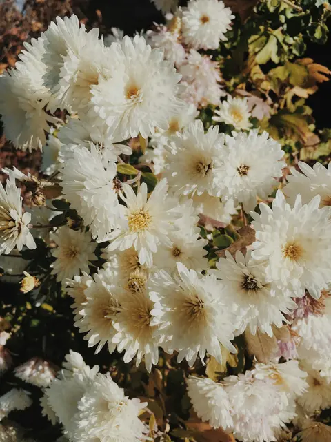
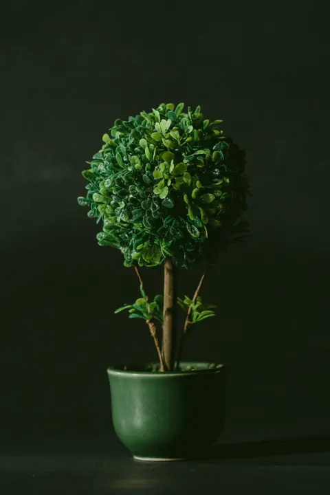
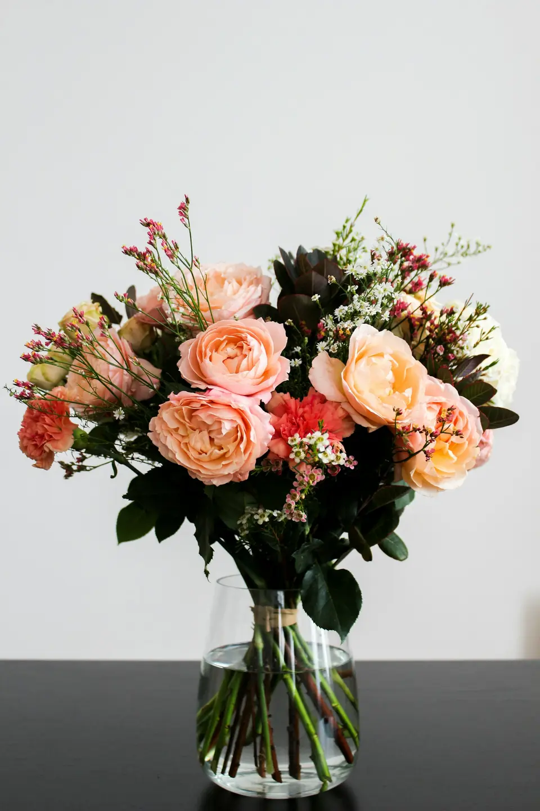

Bouquets de saison
Ronds, champêtres ou structurés : des bouquets composés selon les plus belles fleurs du moment, à offrir ou à s'offrir.
Artisan fleuriste
Des bouquets qui ont le goût de la saison, composés à la main, tige après tige : pour dire je t'aime, merci, bienvenue ou au revoir.


L'atelier
Ici, chaque bouquet commence par une rencontre : une émotion à transmettre, une personne à toucher, une saison à célébrer. Nous choisissons les fleurs une à une, nous les marions par leurs couleurs et leurs parfums, puis nous les nouons à la main, avec le soin d'un geste qui ne se répète jamais tout à fait.
Créations

Ronds, champêtres ou structurés : des bouquets composés selon les plus belles fleurs du moment, à offrir ou à s'offrir.
Paniers fleuris, compositions en coupe, attentions pour une naissance ou un anniversaire, accompagnées d'une peluche ou d'un mot.

Bouquet de mariée, boutonnières, décor de table et d'église : nous imaginons ensemble l'univers floral de votre journée.

Cœurs, coussins, gerbes et dessus de cercueil, réalisés avec délicatesse pour accompagner un dernier adieu.

Plantes vertes et fleuries, orchidées et plantes de saison, avec des conseils pour qu'elles durent longtemps.
Une idée précise, une couleur, un budget ?
Composer mon bouquetLa boutique
Un mur vert sauge, un parquet de bois blond, de vieux meubles chinés et, partout, des seaux de fleurs fraîches. Quelques créations, tout droit sorties de l'atelier.

L'atelier en ligne
Choisissez vos fleurs, une palette et une taille : votre bouquet prend forme sous vos yeux. Envoyez-nous ensuite votre idée, nous la réalisons avec les plus belles fleurs du moment.
Calendrier des fleurs
Les fleurs de saison sont plus belles, plus parfumées et tiennent plus longtemps. Parcourez l'année, et découvrez ce que chacune raconte dans le langage des fleurs.
Commander
Racontez-nous l'occasion, la personne, les couleurs qu'elle aime et votre budget : nous vous proposons une création sur mesure.
Adresse, téléphone et horaires : très bientôt en ligne. En attendant, préparez votre demande ci-contre, puis passez nous la confier à la boutique.